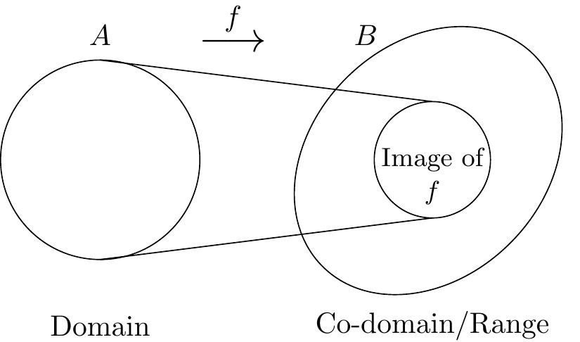

\[\begin{eqnarray*} \{a,b,c,d\} &=& \{b,d,c,a\} = \ldots \\ \{a,a,c,b,a,c\} &=&\{a,b,c\}. \end{eqnarray*}\]
1 Pre-requisites
We begin with a very brief reminder of some important ideas from the theory of sets and functions from first-year Algebra. We shall return to these ideas frequently during the course of this module. We also have a reminder of some of the basics of congruencies.
Sets
Recall that a set is a collection of objects which may be finite or infinite in size. For our purposes, the order of the elements of a set is irrelevant and we ignore repeated elements. For example,
We use different notation for sets, depending on the size of the set and context. In addition, we shall frequently use the ‘set-builder’ notation. Some examples are:
the set of natural numbers
\[\{0,1,2,\ldots\} \text{ or } \N.\]
the set of even numbers
\[\{m \in \Z : m = 2k, k \in Z\}= \mathbb{E}.\]
the set of numbers that are both even and odd
\[\emptyset = \{\}.\]
Note
- The set \(\{\emptyset\}= \{\{\}\}\) is not empty since it contains the empty set!
- Not every thing you can write down is a set! This is not an issue we will worry about in this course but it is worth knowing. A famous example of a non-set is ‘The set of all sets that do not contain themselves’. This is Russel’s Paradox and you can read more about Russel and his paradox by following the link.
We use \(x \in S\) to denote that \(x\) is an element of the set \(S\) and \(A \subseteq S\) to denote that \(A\) is a subset of \(S\) (so, \(A\) contains only a sub-collection of things that are in \(S\) and nothing that is not in \(S\) and, as a consequence, for any set \(S\), both \(\emptyset\) and \(S\) itself are subsets of \(S\)). Note that \(A \subset S\) means that \(A\) is a proper subset of \(S\), that is, \(A\) cannot be \(S\) itself. Remember that if we wish to demonstrate that two sets, \(X\) and \(Y\) say, are equal, then it is necessary to show both that \(X \subseteq Y\) and \(Y \subseteq X\). If \(S\) and \(T\) are sets then we denote the set difference \(S \backslash T\). This, itself, is a set and contains all of the elements that are in \(S\) but not in \(T\). So, for example, we could denote the set of non-zero integers as \(\Z \backslash \{0\}\) (note that this operation is defined with respect to two sets, so \(\Z \backslash 0\) would be nonsense).
The Cartesian product of two sets, \(A\) and \(B\) say, is denoted \(A \times B\) and is the set of all possible ordered pairs where the first element of the pair comes from set \(A\) and the second element comes from set \(B\). Since these are ordered pairs the order of the elements within each pair is critical, though the order in which the pairs themselves appear in \(A \times B\) is irrelevant.
Example 1.1 Let \(A = \{1, 2, 3\}\) and \(B= \{s, t\}\). Then
\[\begin{eqnarray*} A \times B &=& \{(1,s), (1,t), (2,s), (2,t), (3,s), (3,t) \} = \{(a,b): a \in A, b \in B\} \\ B \times A &=& \{(s,1),(s,2), (s,3),(t,1), (t,2),(t,3)\} = \{(b,a): b \in B, a \in A\}. \end{eqnarray*}\]
Functions
A function is a rule that determines a mapping from one set (the domain) to another set (the co-domain). The image of a function is the subset of the codomain onto which all elements from the domain are mapped. Recall that for a function to be well-defined it must be the case that the function can map a single element of the domain only onto a single element of the co-domain.
We say that a function, \(f:A \to B\) is injective if and only if \(f(a) = f(b) \implies a = b\) for all \(a, b \in A\). A function is surjective if and only if \(\forall b \in B \; \exists \; a \in A\) such that \(f(a)=b\). In effect this says that the image of a surjective function coincides exactly with its co-domain. We say that a function is bijective if and only if it is both injective and surjective. Recall that any function that is bijective has a well-defined inverse.
Example 1.2

Let \(f: \R \to \R\) be defined by \(f(x) = x^2\) for all \(x \in \R\). Observe that \(f\) is not injective since \(f(x) = f(-x)\) for any \(x \in \R\). In particular, \(f(2) = f(-2)\).
We can, however, make \(f\) injective by changing its domain. More precisely, the map \(f_1 : \R_{\ge 0} : \R\) by \(f_1(x) = x^2\) is injective.
Now both \(f\) and \(f_1\) are not surjective since the image of \(f\) equal to the image of \(f_1\) is precisely \(\R_{\ge 0}\). In particular, there is no \(x\) either in the domain of \(f\) or the domain of \(f_1\) such that \(f(x) = -1\).
We can however make \(f_1\) surjective by changing is range. In particular, the map \(f_2: \R_{\ge 0} \to \R_{\ge 0}\) by \(f_2(x) = x^2\) is surjective. For \(x \in \R_{\ge 0}\), the element \(\sqrt{x} \in \R_{\ge 0}\) satisfies \(f_2(\sqrt{x}) = x\).
Now as \(f_2\) is injective as well, it is therefore a bijection. This means that \(f_2\) is invertible. The map \(f_{2}^{-1}: \R_{\ge 0} \to \R_{\ge 0}\) by \(f_2(x) = \sqrt{x}\) is the inverse of \(f_2\).
Congruences
Recall that for any integers \(a\) and \(b\) and any positive integer \(m\), then we define \(a \equiv b \modu m)\) to mean that \(m \divides (a-b)\). This is equivalent to saying that \(a \equiv b \modu m)\) if and only if both \(a\) and \(b\) leave the same principal remainder on division by \(m\).
Example 1.3
- \(3 \equiv 15 \pmod{6}\) since \(6| (3-15)\), alternatively, since both \(3\) and \(15\) have remainder \(3\) upon division by \(6\).
- \(0 \equiv 16 \pmod{4}\).
- \(8 \equiv -4 \pmod{3}\).
Recall that when we do arithmetic modulo some positive integer \(m\), we can either do the usual arithmetic first and then reduce modulo \(m\) or, more conveniently, reduce modulo \(m\) first and then do the arithmetic.
Example 1.4
- \(15 + 38 \pmod{6} = 53 \pmod{6} \equiv 5 \pmod 6\) and \[\begin{eqnarray*} 15 + 38 \pmod{6} &=& 15 \pmod{6} + 38 \pmod{6} \\ &\equiv& 3 \pmod{6} + 2 \pmod{6} \\ &\equiv& 5 \pmod{6} \end{eqnarray*}\]
- \[\begin{eqnarray*} 28 \times 117 \pmod{5} &\equiv& 3 \times 2 \pmod{5}\\ &\equiv& 6 \pmod{5}\\ &\equiv& 1 \pmod{5}. \end{eqnarray*}\]
1.1 Problem Sheet 1
For the example class in Week 2; covers Chapter 1 material.
Question 1.1
Let \(A\) be the set \(\{x, \{1, x\}, \{3\}, \{ \{1, 3\}\}, 3 \}.\) Which of the following statements are true and which are false?
- \(x \in A\).
- \(\{x\} \notin A\).
- \(\{1, x\} \subseteq A\).
- \(\{3, \{3\}\} \subseteq A\).
- \(\{1, 3\} \in A\).
- \(\{\{1, 3 \}\} \subseteq A\).
- \(\{\{1, x \}\} \subseteq A\).
- \(\{1, x \} \notin A\).
- \(\emptyset \subseteq A\).
Question 1.2
Let \(J = \{1, 2, 5, 6\}, K = \{3, 6, 7, 8\}, L = \{4, 5, 7\}, M = \{1, 4, 6, 8\}\) and \(N = \{6, \{8\}\}\). Find the following sets:
- \(J \cap K\).
- \((K \cap M) \cup L\).
- \(\mathcal P (L)\).
- \(L \times N\).
- \(\{x + y \, | \, x \in J, y \in L \}\).
- \(\{ x \, | \, x \in L \times J, x \notin L \times M \}\).
Question 1.3
Show that, for any integers \(a, b\) and \(c\), \[a \mid b \; \text{and} \; b \mid c \; \Rightarrow \; a \mid (b+c).\]
Question 1.4
Let \(m >0\) be a fixed integer and \(a, b\) and \(c\) be any integers. Prove that \[a \equiv b \modu m) \; \Rightarrow \; ac \equiv bc \modu m).\] Is the converse true?